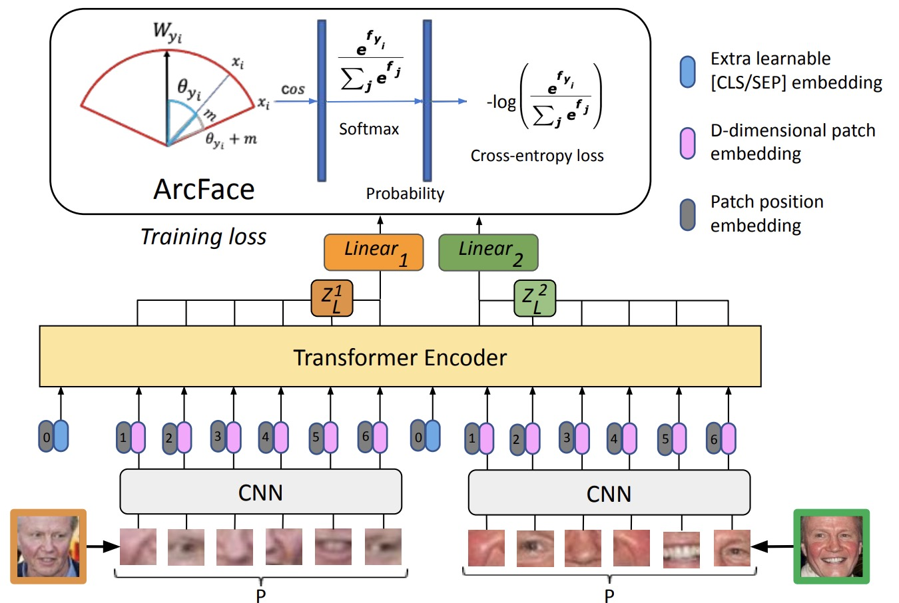

|
Vu (Anthony) Le I'm a first year Computer Science PhD student in the University of Massachusetts Amherst, where I am advised by VP Nguyen on sustainable quantum computing. I am also an affiliate student with the Accelerator Technology & Applied Physics division at Berkeley Lab to work on ML-powered FPGA-based quantum control systems for superconducting quantum bits. Prior to joining UMass Amherst, I had the pleasure of working with Bo Han on neural rendering for immersive telepresence systems and amazing industry folks on face identification using vision transformers. I gained valuable experience working as a software and AI engineer along the way. |

|
News
|
Selected ResearchI'm interested in quantum computing, computer architecture, deep learning, and scalable networked systems. Most of my research is about computer systems, systems and computer vision applications. Some papers are highlighted. |

|
MagicStream: Bandwidth-conserving Immersive Telepresence via Semantic Communication
Ruizhi Cheng, Nan Wu, ACM SenSys 2024, (A* conference) project page / paper MagicStream, a first-of-its-kind semantic-driven immersive telepresence system that effectively extracts and delivers compact semantic details of captured 3D representation of users, instead of traditional bit-by-bit communication of raw content. |
|  |
Fast and Interpretable Face Identification for Out-Of-Distribution Data Using Vision
Transformers
Hai Phan, Cindy Le, CVF/WACV 2024 (A conference) project page / paper / code / poster / presentation Using vision transformers for out-of-distribution data face identification, runs twice faster while achieving comparable performance with the state of the art DeepFace-EMD model. |
MiscellaneaApart from being a researcher, I'm also an experienced software and devops engineer. I enjoy building scalable backend systems that can handle large traffics. |
Web Traffic |
|
The credit of this website template goes to Jon Barron. Thank you! |